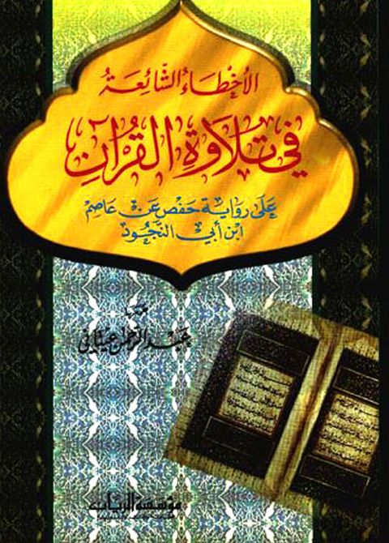

الأخطاء الشائعة في تلاوة القرآن على رواية حفص عن عاصم ابن أبي النجود
Authors: عبد الرحمن العيتاني
Publishers: مؤسسة الريان
Download Downloads need an internet connection.
- Published
- 1998م 1419هـ
- Country
- بيروت، لبنان
- Edition
- 1
- Volumes
- 1
- Pages
- 80
- Type
- كتاب
- Category
- التفسير وعلوم القرآن
- Subcategory
- التجويد
Description
**▫️ العنوان: الأخطاء الشائعة في تلاوة القرآن على رواية حفص عن عاصم ابن أبي النجود** ▪️ المؤلف: #عبد_الرحمن_العيتاني ▫️ الناشر: #مؤسسة_الريان_للطباعة_والنشر_والتوزيع ▪️ تاريخ النشر: 1998م 1419هـ ▫️ بلد النشر: بيروت، #لبنان ▪️ الطبعة: 1 ▫️ عدد الأجزاء: 1 ▪️ الصفحات: 80 ▫️ نوع الوعاء: #كتاب ▪️ التصنيف الرئيسي: #التفسير_وعلوم_القرآن ▫️ التصنيف الفرعي: #التجويد ۪